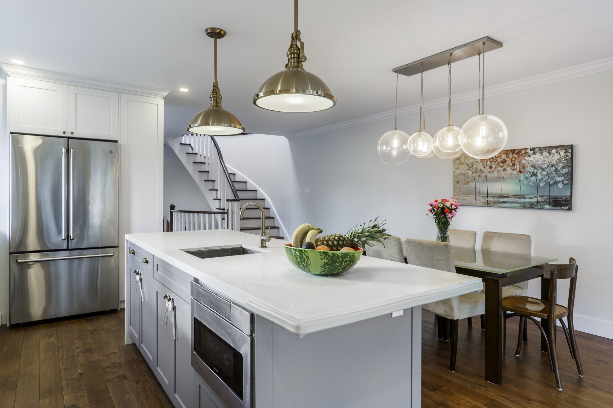
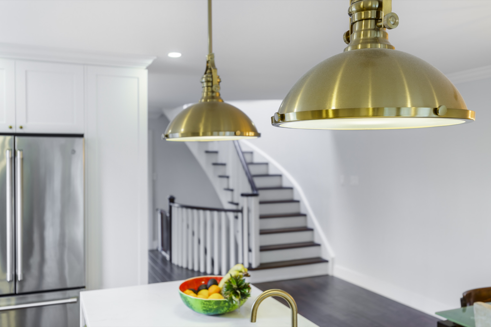

See the connected scope early.
We identify the parts of the room and main floor that the kitchen depends on before cabinetry production locks the answer.
Kitchen Renovations · Toronto & GTA
When walls, flooring, lighting, dining, mechanical work, or the main floor change with the kitchen, Maryani and Capable keep the connected work under one direction.
Map the project scope
The kitchen rarely stops at the cabinet line. A changed opening affects circulation. A new island affects light, flooring, services, and dining. A clean appliance wall depends on electrical, ventilation, clearances, and access. The surrounding renovation has to protect the original room idea.
We identify the parts of the room and main floor that the kitchen depends on before cabinetry production locks the answer.
Layout, cabinetry, lighting, flooring, walls, appliances, surfaces, and adjoining uses are developed as one coordinated direction.
Maryani remains the focused kitchen experience while Capable provides the renovation team and accountable delivery operation behind the connected work.


Scope before fragmentation
The first step is a clear room and scope conversation—not separate product quotes that leave the connections unresolved.